Los filtros o consultas, se implementan siempre en las vistas de lista. El sistema proporciona al usuario los siguientes mecanismos para hacerlos:
▪Lista de Filtros Predefinidos, cuando está disponible en el BO.
▪El botón filtro en el título de la columna. Esta disponible en las columnas que esta permitido crear filtros.
▪La fila de filtros (Filter Row) cuando se habilita para la vista.
▪El diseñador de filtros, cuando se accede a través del menú de contexto .
Filtros Predefinidos
En los BO que están implementados filtros predefinidos (no todos tienen), se muestra la lista a continuación del botón Exportar. Para usarlo debe:
1.Seleccione el filtro deseado de la lista para que el sistema cargue desde el servidor solamente los registros que cumplen los criterios del filtro. La siguiente imagen corresponde a los filtros definidos para las opciones del submenú Depósitos.

2.Después de aplicar el filtro predefinido, tiene la opción de agregar filtros adicionales para limitar el conjunto de datos a desplegar, dando clic en el botón filtro de una columna e ingresando el filtro.
3.Repetir el paso 2 por cada columna a incluir en el filtro.
Botón Filtro
Las columnas de una vista tipo lista en las cuales se permite filtrar, se muestra el botón de filtro al lado derecho del título de la columna. El proceso para crear filtros es el siguiente:
1.Desplazar el cursor en el título de la columna por la cual desea consultar y dar clic en botón filtro . Cuando el botón no se muestra es porque no están habilitados los filtros para esa columna.
2.Se muestra lista para construir el filtro, con las alternativas disponibles, que difiere dependiendo del tipo de dato de la columna. La siguiente imagen corresponde al caso de una columna fecha y hora.
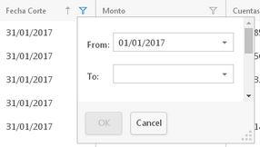
El siguiente caso es cuando la columna es una referencia a otro BO (foreign key) o de tipo enumeración (lista de valores)
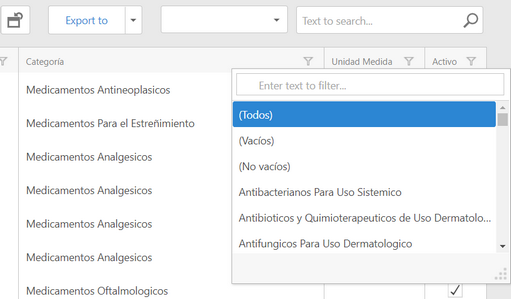
3. Ingrese los valores del filtro. El sistema filtra los datos para mostrar unicamente aquellos que cumplen las condiciones ingresadas.
4.Repita los pasos 1 al 3 por cada columna, que utilizará en el filtro.
5.El sistema muestra al pie de la página el filtro, y lo actualiza cada vez que incorpora nuevas condiciones.
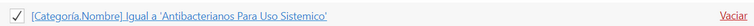
Fila de Filtros (Filter Row)
Con esta funcionalidad se habilita al inicio de la lista una fila para ingresar los criterios (alternativa al botón filtro). Para mostrarla siga los pasos siguientes:
1.Clic al botón derecho del mouse en cualquier título de columna, o en el panel de agrupamiento, en caso de estar habilitado.
2.Se muestra el siguiente menú.
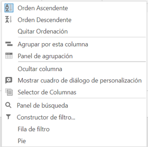
3.Seleccionar la opción Filter Row.
4.Se muestra la fila para ingresar los filtros.
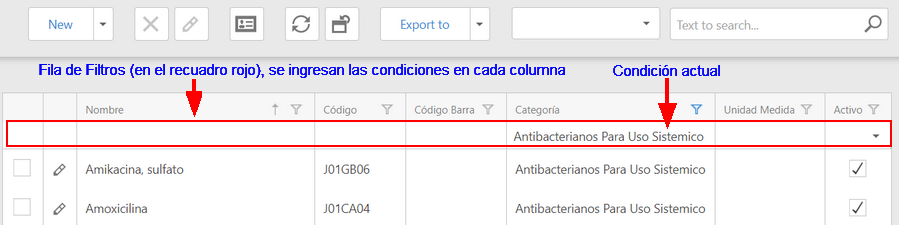
5.Ingrese las condiciones por cada columna. El sistema filtra los datos a medida las va agregando.
6.Para borrar una condición, solo tiene que borrarla de la fila de filtros.
7.Para ocultar la fila de filtros, siga los pasos 1 a 3.
Diseñador de Filtros
Este es el mecanismo más completo para crear filtros y consultas, porque despliega un control especializado para construir los filtros por cualquier columna del BO, incluyendo columnas de otros BO referenciados. Para utilizar esta función:
1.Clic al botón derecho del mouse en cualquier título de columna, o en el panel de agrupamiento en caso de estar habilitado
2.Sistema muestra menú de contexto. Seleccionar la opción 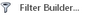

3.Agregar las condiciones.
a.Clic en el botón para agregar un filtro
b.Seleccionar la columna para el filtro. Se muestra lista con las columnas (propiedades del BO) que se pueden usar.
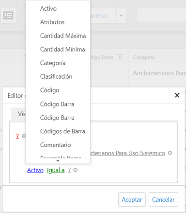
c.En algunos casos (depende del diseño de la aplicación), cuando la propiedad seleccionada (columna) es la referencia a otro BO, se indica con la imagen antes del nombre de la columna. Al seleccionarla se expande para mostrar las columnas del BO referenciado. En el ejemplo se seleccionó Institucion. De esta manera puede elegir una propiedad de Institución para la condición. En este caso el filtro que se construye es el equivalente a hacer join de dos o mas tablas relacionadas para agregar condiciones de cualquiera de ellas.
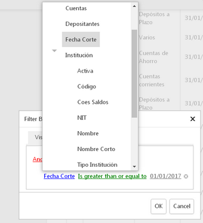
d.Seleccionar el operador relacional de la lista que se muestra después del campo.
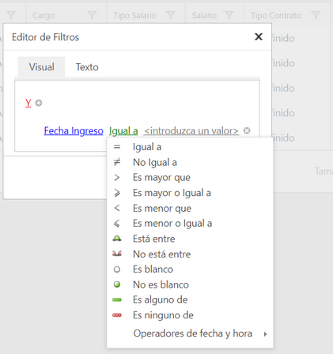
La lista contiene únicamente los operadores que se pueden aplicar al campo seleccionado. En la imagen anterior son operadores para columnas (o propiedad del BO), de tipo fecha (datetime)
La siguiente imagen, es cuando se selecciona una columna de tipo texto.

e.Ingresar los valores para realizar la comparación y completar la condición. La siguiente imagen es cuando se selecciona una columna de tipo fecha (puede digitar la fecha e ignorar el calendario).
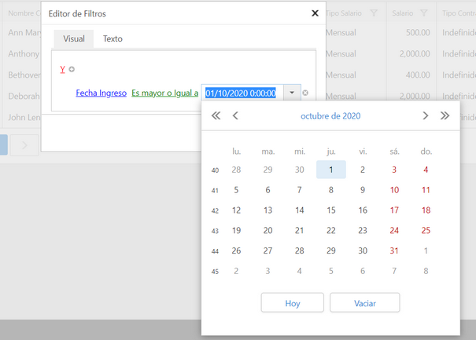
La siguiente imagen es cuando puede seleccionar de una lista de valores. En este caso la propiedad o columna de la condición, es de tipo enumeración o una referencia a otro BO.
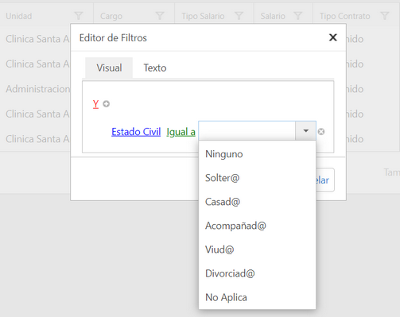
Cuando el tipo de columna (o propiedad) de la condición es texto, o números, debe ingresar el valor (o valores) en la caja de texto.
4.Repetir todas las actividades del paso 3 para agregar otras condiciones.
5.Clic en el botón OK, para aplicar el filtro. El sistema muestra los registros que cumplen las condiciones ingresadas
Notas:
▪ El sistema recordará el último filtro de cada vista tipo Lista en las sesiones siguientes, hasta que lo cambie por otro, lo borre, o deshaga todas las personalizaciones a la vista.
▪Sí habilita la fila de filtros, el sistema lo recordará para las siguientes sesiones y la mostrará, hasta que el usuario la oculte, o deshaga todas las personalizaciones a la vista.
▪Cuando construye un filtro, el sistema muestra al pie de la página el filtro actual, excepto para los filtros predefinidos.